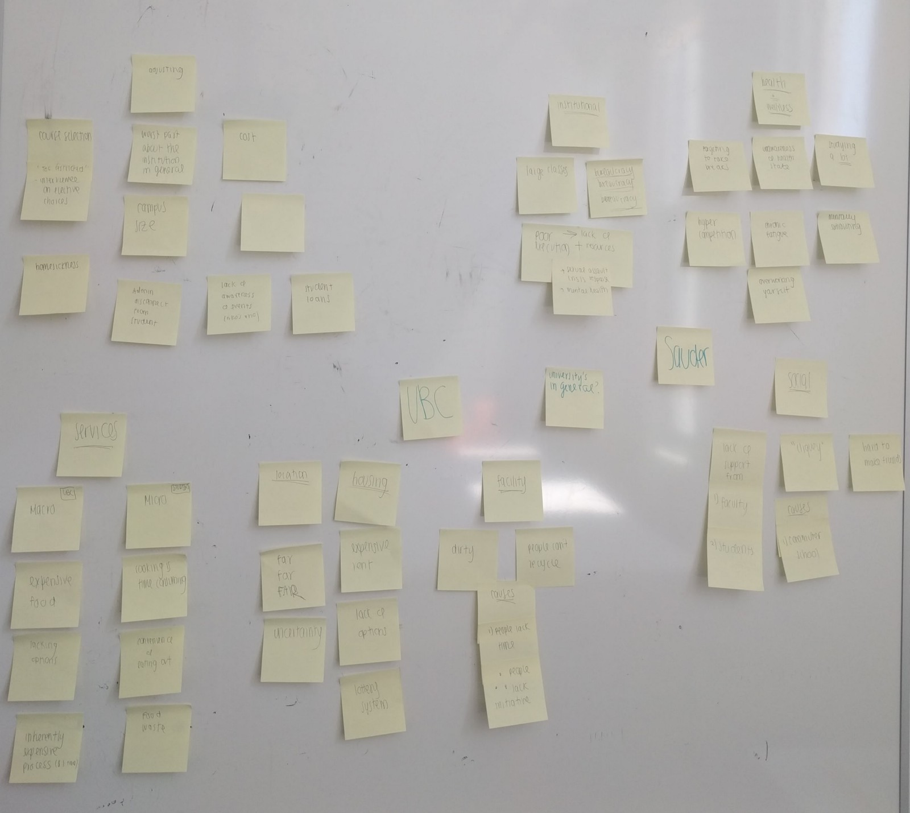
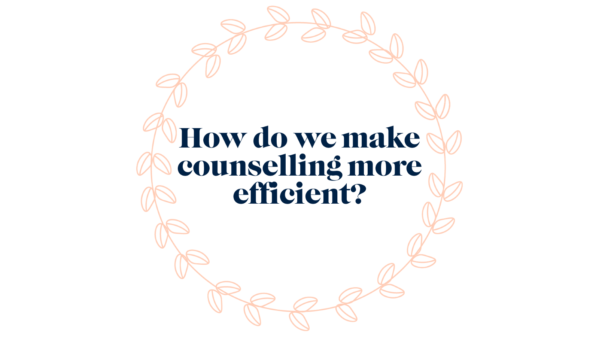
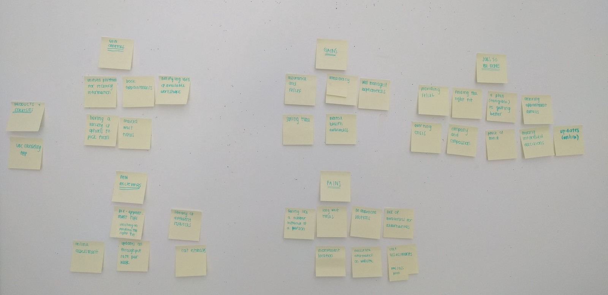
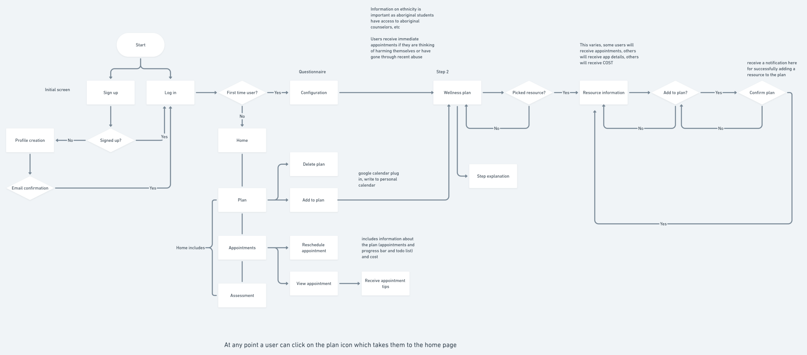
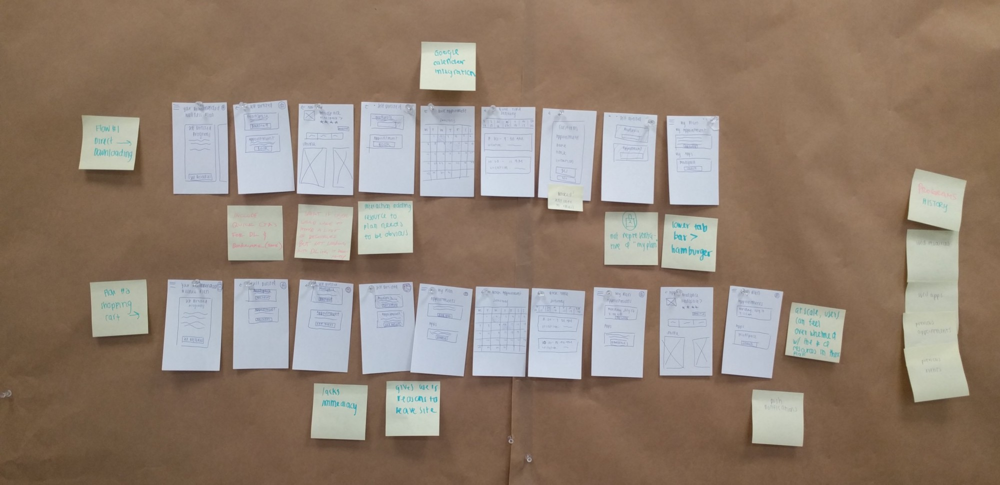
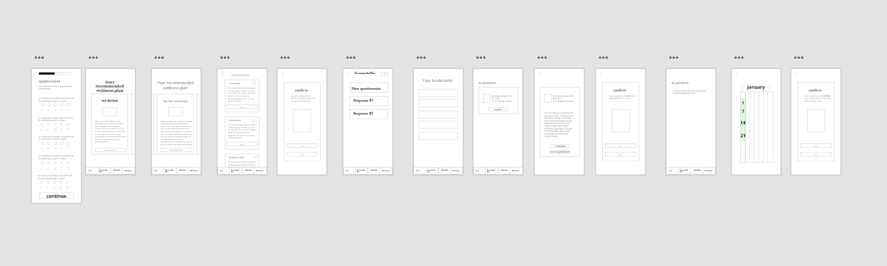
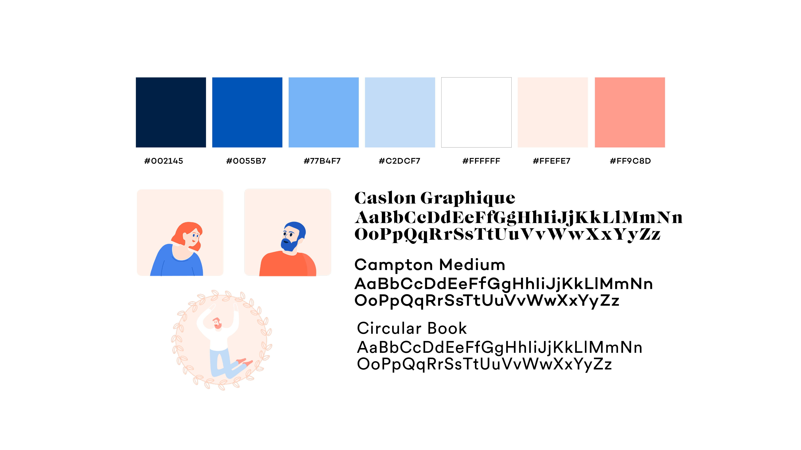

Context
This project was done during a 6-week course at Emily Carr. I was given the topic “Sauder”, the commerce faculty at the University of British Columbia (UBC), as a jumping off point to create a mobile application.
Roles & Responsibilities
While there were a few deliverables, this project was almost entirely self directed. I was responsible for research, paper prototyping, usability testing, low and high fidelity mock ups, and visual design.
Diverging & Converging
To explore my given topic, I began by brainstorming UBC related issues for 10 minutes. There were a few areas I wanted to explore and I wanted to keep track of my ideas without worrying too much about how they would visually appear on paper (which I have learned, slows me down). Sticky notes are fantastic for this reason.
Working under a time constraint is always anxiety inducing — so much so that it can paralyze thought. But by giving myself a fixed amount of time to diverge my thoughts, I was able to recall most significant issues and exclude ones that were less important. By using affinity mapping, I grouped similar issues together. This was incredibly useful for finding connections in and between groups. For example, I realized that long wait times are not exclusive to UBC’s counselling office, but in other universities as well. This served as a jumping off point for forming assumptions about pain points that I could later validate or reject by talking to users.
Problem Definition
A clear winner emerged after this empathy exercise, and I came up with a problem statement to help guide my designs.
Looking at Precedents
One year ago, I didn’t know there were issues with UBC Counselling until I saw this article and this Reddit post detailing JangsJudgement’s experience. To put things into perspective, the article states:
"When a student experiences these longer wait times — the wait isn’t consistently several weeks long — they are a result of a massive increase in demand for the counselling service. According to statistics from UBC Counselling, in 2015, 954 students were seen from September 1 to November 2. This year’s numbers, in that same two-month time span, jumped up by over 300 students, with 1,259 individuals seeking counselling. The service also sees a significant spike in demand during midterms and finals season."
The reception this article received (a high number of upvotes and responses) provided insight on the popularity and severity of the issue. I wanted to take all of this data and condense JangJudgement’s experience into a Journey Map, where I could organize and examine pain points and opportunities in greater detail.
Journey Map
JangsJudgement’s process was broken down into 5 major steps, which laid in accordance with the counselling process outlined on UBC’s website. This includes:
Acknowledgement:
Knowing they need help
Arrival:
Arriving to the counselling building and completing a 15 to 20 minute questionnaire
Waiting:
Waiting 2 weeks for their appointment. Note, the wait time is calculated by the severity of their needs (i.e, Are they suicidal? Have they recently experienced an assault? Are they currently in a crisis?)
Wellness Planning:
Going into the counselling office to meet a counsellor to help make a wellness plan
Plan begins:
At this point, JangsJudgement begins scheduling follow up appointments to receive the help they need
Mapping emotions to stages in JangsJudgement’s journey identified user pain points:
Acknowledgement:
Buffers are created when users are forced to travel (to the counselling office) and limited to restricted times (8:30AM — 4:30PM Monday through Friday)
Arrival:
Users are not expecting to fill in a questionnaire upon arrival
Waiting:
Users have to wait not only a long time, but an unpredictable amount of time before they have access to a counsellor
Wellness Planning:
Wellness plans include information that is already available online
Plan begins:
Help has arrived, but far too late for the user
Testing the Pain Points
I wanted to test these pain points to see if they could be symptoms of larger, overarching issues. At this point, I felt that I haven’t empathized with my users enough. I wanted to determine the significance and priority of each pain point.
Survey
To get insights from users, I created and posted this survey to the UBC subreddit, a community dedicated to UBC related issues, and received 24 submissions. Here’s what I learned:
How long did you wait between knowing you needed help and dropping in for an appointment?
Pain Point: Most students do not seek help immediately.
If your response to the last question was NOT within the day, what factors prevented you from going in that day?
Pain Point: Personal schedules do not line up with counselling office hours.
Are you aware you have to fill in a questionnaire when you visit the counseling office?
Would you consider Brock Hall (where the counselling services are) to be in a convenient location?
Insight: I learned that the location was not as inconvenient as I personally thought it was.
If you were to drop by UBC Counselling, would you expect to receive help that day?
If you were to drop by UBC Counselling, would you expect to pay?
Most students are unaware of the costs associated with counselling.
If you have gone to UBC Counselling, how long did it take to see a counsellor?
Have you ever tried interactive or online mental health related tools (MindCheck, MindShift, HeadSpace)?
If your answer to the previous question was no, why not?
Pain Point: The visibility of mental health resources is an issue.
If you have gone to UBC counselling, how helpful was the wellness plan you made with your counselor? (1 - not helpful, 10 - extremely helpful)
Are you satisfied with UBC Counselling overall?
Surveys are valuable because they can not only validate assumptions, but also disprove them. Travelling to the counselling office is a pain point in JangsJudgement’s experience, but paled in comparison to the general response, who did not consider the location of the office as inconvenient. The more I talked to users, the more I understood their pain points.
Value Proposition Canvas
I had a great understanding of grievances in the current process, but lacked an outline of opportunities. I wanted to ideate quickly, and in a manner that helped me draw connections between user stories and gain creators. Naturally, the value proposition canvas seemed like a great place to start. Using this canvas helped me map out a pain relieving or gain creating feature to pains and gains respectively. It helped with prioritizing necessary features over ones that were nice to have.
User Flow Chart
Outlining the flow from beginning to end ensured important processes were both complete and included. It helped with visualizing entry points to key features, such as the wellness plan and bookmarking resources, to ensure they were accessible throughout the flow.
Paper Prototyping
I was finally in a good position to create some low fidelity wireframes. Paper prototyping is a fast way to get ideas out. This process is inherently messy — the boxes are uneven, the lines are wobbly, and the images are squares. The process would deter some, but I find that abstract looking screens are evaluated more on their function than their appearance. Paper prototyping prevents commitment to any user interface before the foundation is laid out, promoting better user experiences.
I went through variations of the prototype with 4 individuals, who provided a stream of consciousness as they navigated through different parts of the flow. After each individual, I made iterations to the prototype and presented them to the next. The biggest challenge was knowing when to stop and move onto wireframes. I had to ask myself what I was trying to achieve in this process and what should a successful prototype do or prove. At this stage, I wanted to ensure my user flow made sense not only in paper, but also in practice. Paper prototyping helped to flesh out issues related to that.
Wireframing
Although I wanted to go straight into high fidelity mock ups, I knew I wasn’t ready. I tested many aspects of my application, but nothing on usability. My paper prototypes captured the essence of the interface, but not the interface itself. I did some quick wireframing through Adobe XD and presented it to over 10 people. You can view the prototype here.
Style Tile
I created a style tile to guide my designs — this was really helpful for inspiration and ensuring visual consistency. I wanted to use hand drawn illustrations to give a friendly feel to the app (I also love doing these illustrations!). I used colors from UBC’s official style guide to create an association between this app and the school.
Final Product
Finally! I made a prototype in Protopie that replicated the look and feel of the app. Using transitions helps indicate a change in state. I presented this to the same group in the paper protoyping phase and received more feedback on the visibility of certain features. For example, the bottom tab bar went through several iterations with different colors and styles to promote visibility without distracting users from their normal experience. As you view these different gifs, notice that they touch on the biggest pains that we’ve established from the survey above (appointment times and visibility of resources).
As determined by our survey, 58% of users were unaware of mental health apps for a variety of reasons. Taking information from the questionnaire directs users to resources that are the best fit for them, so that users can see the resources when they need them. This helps with visibility, and ensures that this information is no longer lost in a vast library of resources.
Booking appointments is a huge issue at UBC Counselling — 23% of survey respondents could not find appointment times that worked for their schedule. Instead of just having access to UBC counsellors, users now have access to the network of counsellors in the Greater Vancouver area.
Mental health issues take a strain on our users; often, it’s difficult to attend classes or leave the house, which is why rescheduling appointments can be done in one centralized area. Less steps in this process promote accountability.
The form is long, so to increase a higher level of completion, users can save the survey and return to it so that no data is lost in the meantime.
Now that the form is online, users don’t have to wait to drop in during counselling hours to complete it. This reduces the amount of time it takes to not only seek help, but receive access to it.
Final Thoughts & Reflections
Overall, I’m pretty happy with the way this project turned out. Because this was such a large undertaking, I really wish I could revisit some areas related to the questionnaire and explore ways to improve that user experience.
Don’t worry about how things look when ideating. At this stage, it’s more important to capture your thoughts than visually design them. It prevents you from committing to ideas for their look instead of their function.
It’s important to empathize with users, but don’t forget to actually talk to them. And talk to MANY of them. Your users will have different priorities, and you need to explore the significance each issue holds.
If you've made it this far, thanks for reading!